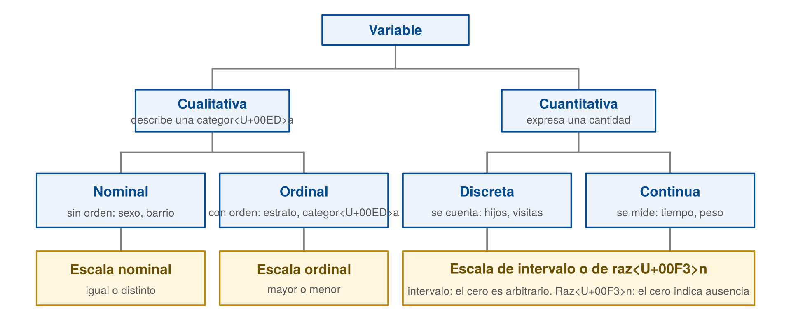
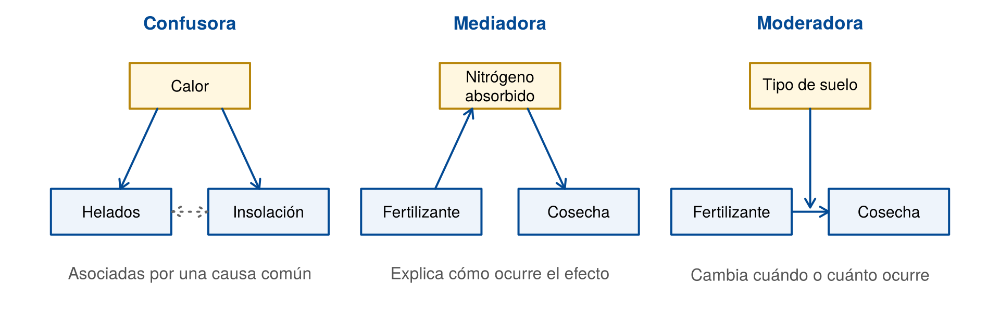
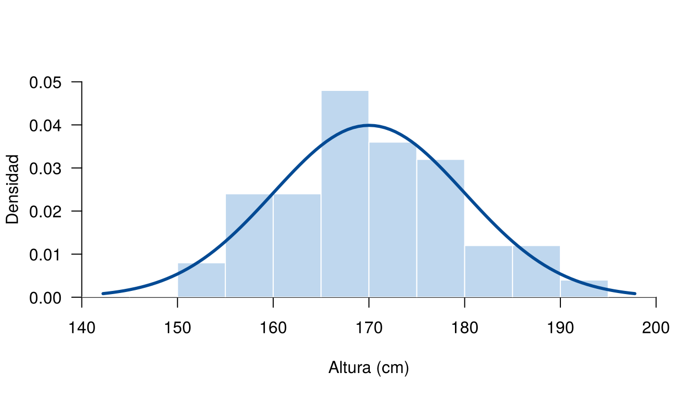
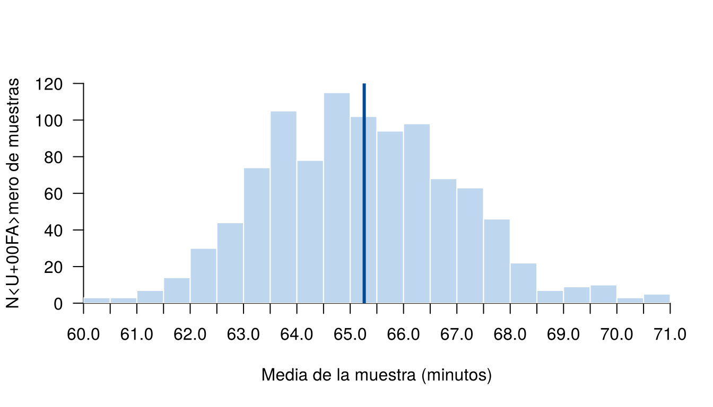

Antes de calcular un promedio o hacer un gráfico hay que responder tres preguntas: ¿qué se quiere saber?, ¿sobre quién? y ¿qué se midió? De esas respuestas depende qué análisis tiene sentido y hasta dónde llegan las conclusiones.
Esta página presenta el vocabulario que se usa en el resto de la
sección. El ejemplo principal es la base CarreraLuz22, del
paquete paqueteMETODOS, con los 1,922 atletas de la carrera
La Luz 2022, en Cali.
library(paqueteMETODOS)
data("CarreraLuz22")head(CarreraLuz22, 3)# A tibble: 3 × 7
id sex edad origen timerun categoria nacionalidad
<dbl> <chr> <int> <chr> <dbl> <chr> <chr>
1 1 Hombre 22 Sevilla 1988 2. Abierta COL
2 2 Hombre 31 Sevilla 2041 2. Abierta COL
3 3 Hombre 31 Yumbo 2083 2. Abierta COL Los bloques de código de esta página se ejecutan en orden, porque algunos usan objetos creados en bloques anteriores.
Existen varias definiciones de estadística. Estas son algunas de ellas:
Estudio matemático de la incertidumbre y la variabilidad que proporciona herramientas y métodos para describir, modelar y analizar fenómenos aleatorios, y tomar decisiones basadas en la información disponible.
Kolmogorov, A. N. (1933)
Ciencia que trata de la toma de decisiones en presencia de incertidumbre mediante el uso de datos observados.
Fisher, R. A. (1959)
Conjunto de métodos para recopilar, organizar, resumir, presentar y analizar datos, así como para obtener conclusiones válidas y tomar decisiones razonables basadas en tal análisis.
Walpole, R. E. (2012)
Ciencia que utiliza métodos para recopilar, describir, analizar e interpretar datos, así como para tomar decisiones basadas en dichos análisis.
Anderson, D. R. (2013)
Estas definiciones tienen algo en común: usan datos o información para tomar decisiones. La incertidumbre aparece porque casi nunca se observa todo, y porque las mediciones varían de una persona, un objeto o un momento a otro.
Su trabajo se suele dividir en dos partes:
| Parte | Qué hace | Ejemplo con la carrera |
|---|---|---|
| Estadística descriptiva | Resume los datos observados con tablas, indicadores y gráficos | Calcular el tiempo promedio de los atletas |
| Inferencia estadística | Usa una muestra para concluir sobre una población, con un margen de error | Usar una muestra de 50 atletas para estimar el tiempo promedio de todos |
Un estudio no empieza con los datos, sino con una pregunta. Wild y Pfannkuch (1999) adaptan el modelo PPDAC, de MacKay y Oldford, con estas cinco etapas:
| Etapa | Pregunta guía | Ejemplo con la carrera |
|---|---|---|
| Problema | ¿Qué se quiere saber? | ¿Cambia el tiempo según la edad y el sexo? |
| Plan | ¿Qué se va a medir y a quiénes? | Atletas de la carrera: tiempo, sexo y edad |
| Datos | ¿Cómo se recogen y organizan? | Revisar registros, unidades y datos faltantes |
| Análisis | ¿Qué muestran los datos? | Tablas, indicadores y gráficos por grupo |
| Conclusiones | ¿Qué se responde y con qué límites? | Comunicar el resultado y aclarar a quiénes aplica |
Llegará el día en el que el pensamiento estadístico será una condición tan necesaria para la convivencia eficiente como la capacidad de leer y escribir.
H. G. Wells
Estos son algunos hechos clave:
| Año | Hecho |
|---|---|
| 1654 | Pascal y Fermat discuten por carta cómo repartir una apuesta, un punto de partida de la teoría de la probabilidad |
| 1662 | Graunt analiza registros de mortalidad |
| 1713 | Se publica Ars Conjectandi, de Bernoulli, con una primera forma de la ley de los grandes números |
| 1812 | Laplace publica su teoría analítica de la probabilidad |
| 1919-1933 | Fisher trabaja en Rothamsted, donde introduce la aleatorización y el análisis de varianza en el diseño de experimentos |
| 1977 | Tukey publica Exploratory Data Analysis |
La unidad de análisis es el elemento sobre el cual
se observa o se mide algo. Cada fila de una base de datos ordenada
corresponde, por lo general, a una unidad. En CarreraLuz22,
la unidad de análisis es cada atleta.
| Estudio | Unidad de análisis |
|---|---|
| Satisfacción de los clientes de un banco | Cliente |
| Control de calidad de botellas | Botella |
| Fertilidad del suelo | Parcela |
| Calidad del agua de un río | Muestra de agua en un punto y un momento |
| Precio de la vivienda en Cali | Vivienda |
Definirla mal lleva a conclusiones equivocadas. Por ejemplo, si se mide el rendimiento de varios estudiantes en cada colegio, la unidad puede ser el estudiante o el colegio, según la pregunta.
Una variable es una característica que se registra en cada unidad de análisis y que puede cambiar de una unidad a otra. Su tipo determina qué tablas, indicadores y gráficos se pueden usar.

Tipos de variables y escalas de medición. Elaboración propia a partir de Stevens (1946) y del material del curso.
caja <- function(x, y, ancho, alto, titulo, detalle = "",
borde = "#034A94", fondo = "#EEF4FB", color = "#034A94") {
rect(x - ancho / 2, y - alto / 2, x + ancho / 2, y + alto / 2,
border = borde, col = fondo, lwd = 2)
text(x, y + ifelse(nzchar(detalle), alto * 0.17, 0), titulo, font = 2, col = color, cex = 1.05)
text(x, y - alto * 0.24, detalle, col = "#555555", cex = 0.82)
}
op <- par(mar = c(0, 0, 0, 0))
plot.new()
plot.window(xlim = c(0, 100), ylim = c(0, 100))
segments(50, 89, 50, 81, col = "gray50", lwd = 2)
segments(c(25, 25, 75), 81, c(75, 25, 75), c(81, 74, 74), col = "gray50", lwd = 2)
segments(c(25, 12.5, 12.5, 37.5, 75, 62.5, 62.5, 87.5), c(60, 53, 53, 53, 60, 53, 53, 53),
c(25, 37.5, 12.5, 37.5, 75, 87.5, 62.5, 87.5), c(53, 53, 46, 46, 53, 53, 46, 46),
col = "gray50", lwd = 2)
segments(c(12.5, 37.5, 62.5, 87.5), 28, c(12.5, 37.5, 62.5, 87.5), 20, col = "gray50", lwd = 2)
caja(50, 94, 20, 10, "Variable")
caja(25, 67, 21, 14, "Cualitativa", "describe una categoría")
caja(75, 67, 21, 14, "Cuantitativa", "expresa una cantidad")
caja(12.5, 37, 23, 18, "Nominal", "sin orden: sexo, barrio")
caja(37.5, 37, 23, 18, "Ordinal", "con orden: estrato, categoría")
caja(62.5, 37, 23, 18, "Discreta", "se cuenta: hijos, visitas")
caja(87.5, 37, 23, 18, "Continua", "se mide: tiempo, peso")
amarillo <- list(borde = "#B8860B", fondo = "#FFF7E0", color = "#6B4E00")
caja(12.5, 11, 23, 18, "Escala nominal", "igual o distinto",
amarillo$borde, amarillo$fondo, amarillo$color)
caja(37.5, 11, 23, 18, "Escala ordinal", "mayor o menor",
amarillo$borde, amarillo$fondo, amarillo$color)
caja(75, 11, 48, 18, "Escala de intervalo o de razón",
"intervalo: el cero es arbitrario. Razón: el cero indica ausencia",
amarillo$borde, amarillo$fondo, amarillo$color)
par(op)Las variables de la carrera se clasifican así:
| Variable | Qué registra | Tipo | Escala |
|---|---|---|---|
id |
Identificador del atleta | Cualitativa nominal | Nominal |
sex |
Hombre o mujer | Cualitativa nominal | Nominal |
origen |
Lugar de origen | Cualitativa nominal | Nominal |
nacionalidad |
País | Cualitativa nominal | Nominal |
categoria |
Categoría de competencia | Cualitativa ordinal | Ordinal |
edad |
Edad | Cuantitativa discreta | Razón |
timerun |
Tiempo en segundos | Cuantitativa continua | Razón |
id es numérica en R, pero promediarla
no tiene sentido porque solo identifica. Un código de 1 = fraude y 0 =
no fraude también es cualitativo: es una variable indicadora. El
estrato socioeconómico usa números, pero es ordinal: el estrato 4 es
mayor que el 2, pero no es el doble. El tipo de variable se decide por
lo que significa, no por cómo se almacena.
edad aparece en números enteros y por eso se clasifica
como discreta.
Stevens (1946) propuso cuatro escalas, según las comparaciones que permiten:
| Escala | Permite | Ejemplos | Promedio |
|---|---|---|---|
| Nominal | Decir si dos valores son iguales | Sexo, barrio, nacionalidad | No |
| Ordinal | Ordenar | Estrato, satisfacción, nivel educativo | Con cuidado |
| Intervalo | Comparar diferencias. El cero es una convención | Temperatura en °C o °F, fechas | Sí |
| Razón | Comparar diferencias y cocientes. El cero indica ausencia | Tiempo, peso, salario, temperatura en K | Sí |
En escala de intervalo no tiene sentido decir que un valor es el doble de otro. Por ejemplo, 20 °C no es el doble de calor que 10 °C. Si se pasan a kelvin, la escala absoluta, el cociente es cercano a 1:
(20 + 273.15) / (10 + 273.15)[1] 1.035317En cambio, un tiempo de 80 minutos sí es el doble de uno de 40, porque el tiempo es de razón. La temperatura en kelvin se escribe K, sin el símbolo de grado.
Una misma medición se puede expresar de varias formas: un tiempo en minutos o en segundos, una temperatura en °C o en °F, o una satisfacción con los códigos 1, 2 y 3 o 1, 2 y 10. Una conclusión solo es confiable si no cambia al hacer esos cambios permitidos.
Stevens (1946) define cada escala según los cambios que se pueden hacer sin perder información:
| Escala | Cambio permitido | Ejemplo | Qué se conserva | Indicadores que tienen sentido |
|---|---|---|---|---|
| Nominal | Cambiar los nombres: \(x' = f(x)\), con \(f\) uno a uno | Hombre por H | Quiénes son iguales | Conteos y moda |
| Ordinal | Cambiar los códigos sin alterar el orden: \(x' = f(x)\), con \(f\) creciente | 1, 2, 3 por 1, 2, 10 | El orden | Lo anterior, mediana y percentiles |
| Intervalo | Cambiar la unidad y el cero: \(x' = ax + b\), con \(a \neq 0\) | °C por °F | La comparación de diferencias | Lo anterior, media y desviación estándar |
| Razón | Cambiar solo la unidad: \(x' = ax\), con \(a > 0\) | Minutos por segundos | La comparación de cocientes | Lo anterior y coeficiente de variación |
Ejemplo 1. En escala de razón, el doble sigue siendo el doble. Un tiempo de 80 minutos es el doble de 40, y lo sigue siendo en segundos:
minutos <- c(40, 80)
segundos <- 60 * minutos
minutos[2] / minutos[1][1] 2segundos[2] / segundos[1][1] 2Ejemplo 2. En escala de intervalo, el doble depende de la unidad. 20 parece el doble de 10 en °C, pero el cociente cambia en °F. Por eso, esa frase no tiene sentido en esta escala:
celsius <- c(10, 20)
fahrenheit <- 1.8 * celsius + 32
celsius[2] / celsius[1][1] 2fahrenheit[2] / fahrenheit[1][1] 1.36Ejemplo 3. En escala ordinal, el promedio puede cambiar la conclusión. Suponga dos grupos que califican un servicio como malo, regular o bueno. Si se cambian los códigos sin alterar el orden, el grupo con mayor media cambia, pero la mediana sigue indicando lo mismo:
grupo_a <- c("regular", "regular", "regular")
grupo_b <- c("malo", "malo", "bueno")
niveles <- c("malo", "regular", "bueno")
codigos_1 <- c(malo = 1, regular = 2, bueno = 3)
codigos_2 <- c(malo = 1, regular = 2, bueno = 10)
c(media_a = mean(codigos_1[grupo_a]), media_b = mean(codigos_1[grupo_b])) media_a media_b
2.000000 1.666667 c(media_a = mean(codigos_2[grupo_a]), media_b = mean(codigos_2[grupo_b]))media_a media_b
2 4 niveles[median(codigos_1[grupo_a])][1] "regular"niveles[median(codigos_1[grupo_b])][1] "malo"Con los primeros códigos, el grupo A tiene mayor media. Con los segundos, la tiene el grupo B. La mediana no cambia: regular en el grupo A y malo en el grupo B. Por eso, en una variable ordinal se prefiere la mediana.
Estas escalas orientan el análisis, pero Velleman y Wilkinson (1993) critican esta clasificación y la consideran engañosa. El método también depende de la pregunta y del contexto.
Una variable indicadora toma el valor 1 si la unidad tiene una característica y 0 si no la tiene. También se llama variable dummy o ficticia. Es una variable cualitativa nominal con dos categorías, aunque se guarde como número.
Muchas bases guardan una variable cualitativa como un grupo de indicadoras, una por categoría. Por ejemplo, el estado civil de tres clientes se puede guardar en una columna o en tres:
| Cliente | Estado civil | casado |
soltero |
union_libre |
|---|---|---|---|---|
| C001 | Casado | 1 | 0 | 0 |
| C002 | Soltero | 0 | 1 | 0 |
| C003 | Unión libre | 0 | 0 | 1 |
Cada cliente tiene un 1 en la columna de su categoría y 0 en las demás. Por eso, en cada fila, las indicadoras de una misma variable suman 1. Esta regla sirve para revisar los datos.
En CarreraLuz22, la variable categoria
tiene cinco categorías. Para cada una se compara la variable con la
categoría: el resultado es TRUE o FALSE, y
as.integer() lo convierte en 1 o 0. La función
sapply(), explicada en Funciones
apply, lapply y sapply, repite la comparación para cada
categoría:
categorias <- sort(unique(CarreraLuz22$categoria))
categorias[1] "1. Juvenil" "2. Abierta" "3. Veteranos A" "4. Veteranos B"
[5] "5. Veteranos C"indicadoras <- sapply(categorias, function(k) as.integer(CarreraLuz22$categoria == k))
colnames(indicadoras) <- c("juvenil", "abierta", "veteranos_a", "veteranos_b", "veteranos_c")
head(indicadoras, 3) juvenil abierta veteranos_a veteranos_b veteranos_c
[1,] 0 1 0 0 0
[2,] 0 1 0 0 0
[3,] 0 1 0 0 0La función model.matrix(), del paquete
stats, que viene con R, también crea
indicadoras. La usan los modelos de regresión.
La suma de una indicadora es el número de unidades con la característica, y su media es la proporción:
colSums(indicadoras) juvenil abierta veteranos_a veteranos_b veteranos_c
19 1179 423 227 74 round(colMeans(indicadoras), 3) juvenil abierta veteranos_a veteranos_b veteranos_c
0.010 0.613 0.220 0.118 0.039 Los conteos coinciden con los de
table(CarreraLuz22$categoria). Por ejemplo, el 61.3 % de
los atletas corrió en la categoría abierta. A diferencia de un código
como el estrato, el promedio de una indicadora sí tiene una lectura
directa: es la proporción \(\hat{p}\)
que aparece en ¿Qué
son parámetro, estimador y estimación?.
Para hacer una tabla de frecuencias o un gráfico de barras se necesita una sola variable. Se siguen tres pasos:
El siguiente ejemplo tiene seis clientes. Tres tienen problemas a propósito:
clientes <- data.frame(
id_cliente = c("C001", "C002", "C003", "C004", "C005", "C006"),
casado = c(1, 0, 0, 0, 0, 1),
soltero = c(0, 1, 0, 0, 0, 0),
union_libre = c(0, 0, 1, 0, 0, 1),
divorciado = c(0, 0, 0, 100, 0, 0),
viudo = c(0, 0, 0, 0, 0, 0)
)
estado <- clientes[, c("casado", "soltero", "union_libre", "divorciado", "viudo")]Paso 1. Revisar. rowSums() suma cada
fila, y %in% comprueba si cada valor es 0 o 1:
solo_0_y_1 <- apply(estado, 1, function(fila) all(fila %in% c(0, 1)))
suma <- rowSums(estado)
clientes[!solo_0_y_1 | suma != 1, ] id_cliente casado soltero union_libre divorciado viudo
4 C004 0 0 0 100 0
5 C005 0 0 0 0 0
6 C006 1 0 1 0 0Aparecen tres casos que no se deben reconstruir sin revisarlos:
divorciado.
Parece un 1 mal digitado.Lo ideal es confirmar cada caso con la fuente. Aquí se supone que se confirmó que el 100 es un 1. Los otros dos se dejan como faltantes, y se tratan como se explica en Datos faltantes.
estado[estado == 100] <- 1 # corrección confirmada con la fuente
validas <- rowSums(estado) == 1
validas[1] TRUE TRUE TRUE TRUE FALSE FALSEPaso 2. Tomar el nombre de la columna.
max.col() devuelve, en cada fila, la posición de la columna
con el valor más alto. Como en las filas válidas hay un solo 1, esa
posición es la de su categoría:
clientes$estado_civil <- NA
clientes$estado_civil[validas] <- colnames(estado)[max.col(estado[validas, ])]Paso 3. Convertir en factor. El argumento
levels fija el orden de las categorías en tablas y
gráficos, e incluye las que no aparecen, como viudo:
clientes$estado_civil <- factor(clientes$estado_civil, levels = colnames(estado))
clientes[, c("id_cliente", "estado_civil")] id_cliente estado_civil
1 C001 casado
2 C002 soltero
3 C003 union_libre
4 C004 divorciado
5 C005 <NA>
6 C006 <NA>table(clientes$estado_civil, useNA = "ifany")
casado soltero union_libre divorciado viudo <NA>
1 1 1 1 0 2 Si la variable es ordinal, como el nivel educativo o la categoría de
la carrera, se agrega ordered = TRUE y las columnas se
ponen en orden. Con la carrera, el resultado coincide con la variable
original:
categoria_nueva <- factor(colnames(indicadoras)[max.col(indicadoras)],
levels = colnames(indicadoras), ordered = TRUE)
table(categoria_nueva)categoria_nueva
juvenil abierta veteranos_a veteranos_b veteranos_c
19 1179 423 227 74 all(as.vector(table(categoria_nueva)) == as.vector(table(CarreraLuz22$categoria)))[1] TRUESi una fila tiene dos unos, o solo ceros, hay un empate, y
max.col() elige una columna al azar. El resultado cambiaría
en cada ejecución sin ningún aviso. Por eso, antes de usarla, se revisa
que cada fila sume 1.
Con \(k\) categorías bastan \(k - 1\) indicadoras, porque la que falta se deduce de las demás: si un cliente tiene 0 en cuatro columnas de estado civil, pertenece a la quinta. Los modelos de regresión, que se estudian en la Unidad 3, usan \(k - 1\) indicadoras y dejan una categoría de referencia (Çetinkaya-Rundel y Hardin, 2021). R lo hace solo cuando la variable es un factor o texto.
En un estudio, las variables también se distinguen por su función:
| Papel | Qué es | Ejemplo hipotético en un cultivo |
|---|---|---|
| Respuesta o dependiente | Lo que se quiere explicar o predecir | Kilogramos cosechados |
| Explicativa o independiente | Lo que se manipula o se usa para explicar la respuesta | Tipo de fertilizante |
| De control | Se mantiene constante o se tiene en cuenta en el análisis | Cantidad de riego |
| Confusora | Se relaciona con las dos anteriores y puede crear o esconder una asociación | Experiencia del agricultor, si los más expertos eligen un fertilizante |
| Mediadora | Explica cómo o por qué ocurre el efecto | Nitrógeno absorbido por la planta |
| Moderadora | Indica cuándo o con qué fuerza ocurre el efecto | Tipo de suelo |

Tres formas en que una tercera variable se relaciona con otras dos. Ejemplos hipotéticos. Elaboración propia; mediadora y moderadora a partir de Baron y Kenny (1986).
nodo <- function(x, y, etiqueta, tercera = FALSE) {
rect(x - 6.5, y - 8, x + 6.5, y + 8, lwd = 2,
border = if (tercera) "#B8860B" else "#034A94",
col = if (tercera) "#FFF7E0" else "#EEF4FB")
text(x, y, etiqueta, cex = 0.95)
}
flecha <- function(x0, y0, x1, y1, lty = 1, code = 2, col = "#034A94") {
arrows(x0, y0, x1, y1, length = 0.1, lwd = 2, lty = lty, code = code, col = col)
}
op <- par(mar = c(0, 0, 0, 0))
plot.new()
plot.window(xlim = c(0, 100), ylim = c(0, 100))
text(c(16.5, 50, 83.5), 96, c("Confusora", "Mediadora", "Moderadora"),
font = 2, col = "#034A94", cex = 1.1)
nodo(16.5, 74, "Calor", TRUE); nodo(8, 30, "Helados"); nodo(25, 30, "Insolación")
flecha(13, 66, 9, 38); flecha(20, 66, 24, 38)
flecha(14.6, 30, 18.4, 30, lty = 3, code = 3, col = "gray40")
text(16.5, 8, "Asociadas por una causa común", col = "#555555")
nodo(50, 74, "Nitrógeno\nabsorbido", TRUE); nodo(41.5, 30, "Fertilizante"); nodo(58.5, 30, "Cosecha")
flecha(43, 38, 47, 66); flecha(53, 66, 57, 38)
text(50, 8, "Explica cómo ocurre el efecto", col = "#555555")
nodo(83.5, 74, "Tipo de suelo", TRUE); nodo(75, 30, "Fertilizante"); nodo(92, 30, "Cosecha")
flecha(81.5, 30, 85.5, 30); flecha(83.5, 66, 83.5, 31.5)
text(83.5, 8, "Cambia cuándo o cuánto ocurre", col = "#555555")
par(op)Una asociación no prueba una causa. Suponga que las ventas de helados y los casos de insolación aumentan juntos. Eso no significa que uno cause el otro: el calor puede influir en ambos. En ese caso, el calor es una variable confusora.
La población es el conjunto completo de unidades sobre el que se quiere concluir. La muestra es la parte de esa población que realmente se observa. La población objetivo debe definirse con claridad: quiénes, dónde y cuándo.
| Pregunta | Población | Variable |
|---|---|---|
| ¿Cuál fue el tiempo promedio de la carrera? | Atletas de la carrera La Luz 2022 | timerun |
| ¿Cuánto cuesta en promedio un apartamento en Cali? | Apartamentos de Cali en una fecha determinada | Precio |
| ¿Qué proporción de transacciones es fraudulenta? | Transacciones de un banco en un mes | Fraude (sí o no) |
Una misma población permite estudiar muchas variables. Una base no es
una muestra o una población por sí misma: depende de la pregunta.
CarreraLuz22 es la población si se pregunta por esa
carrera, pero no es una muestra aleatoria de los corredores de Cali,
porque quienes se inscriben pueden ser distintos de quienes no lo
hacen.
Si la población tiene \(N\) unidades, los valores de una variable se representan como:
\[ \text{Población} = \{x_1, x_2, \dots, x_N\} \]
Una muestra de tamaño \(n\), con \(n \leq N\), es un subconjunto de esos valores:
\[ \text{Muestra} = \{x_1, x_2, \dots, x_n\} \]
Los valores que resumen la población se calculan con todas sus unidades:
\[ \mu = \frac{1}{N} \sum_{i=1}^{N} x_i \qquad \sigma^2 = \frac{1}{N} \sum_{i=1}^{N} (x_i - \mu)^2 \qquad p = \frac{A}{N} \]
donde \(A\) es el número de unidades con la característica de interés. En la carrera, con \(N\) = 1,922:
tiempo <- CarreraLuz22$timerun / 60 # tiempo en minutos
N <- length(tiempo)
mu <- sum(tiempo) / N # media poblacional
sigma <- sqrt(sum((tiempo - mu)^2) / N) # desviación estándar poblacional
p <- sum(CarreraLuz22$sex == "Mujer") / N # proporción de mujeres
c(mu = mu, sigma = sigma, p = p) mu sigma p
65.2627385 12.7174653 0.3870968 La función sd() divide entre \(n - 1\), porque está pensada para muestras.
Por eso aquí \(\sigma\) se calcula con
su fórmula.
En un muestreo probabilístico, cada unidad de la población tiene una probabilidad conocida y mayor que cero de ser elegida. Esto permite cuantificar el error, pero no garantiza que una muestra particular se parezca a la población. Para profundizar se puede consultar Lohr (2021).
Formalmente, si \(\pi_i\) es la probabilidad de que la unidad \(i\) quede en la muestra, se requiere que \(\pi_i > 0\) y que sea conocida. En el muestreo aleatorio simple sin reemplazo, hay \(\binom{N}{n}\) muestras posibles, todas con la misma probabilidad, y:
\[ \pi_i = \frac{n}{N} \]
Con 50 atletas de la carrera, la probabilidad de inclusión es:
50 / nrow(CarreraLuz22)[1] 0.02601457| Tipo de muestreo | Cómo funciona | ¿Probabilístico? |
|---|---|---|
| Aleatorio simple | Todas las muestras del mismo tamaño tienen la misma probabilidad | Sí |
| Sistemático | Se elige una unidad cada cierto número, con inicio aleatorio | Sí |
| Estratificado | Se divide en grupos y se selecciona en cada uno | Sí |
| Por conglomerados | Se seleccionan grupos completos, como barrios o colegios | Sí |
| Por conveniencia | Se usa lo que está al alcance | No |
| Por juicio | Quien investiga decide a quién incluir | No |
| Por cuotas | Se llenan cupos por grupo, sin selección al azar | No |
| Bola de nieve | Cada participante lleva a otros | No |
Por ejemplo, para seleccionar 50 atletas al azar:
set.seed(2022) # fija el resultado aleatorio
muestra <- CarreraLuz22[sample(nrow(CarreraLuz22), 50), ]
nrow(muestra)[1] 50Una muestra es independiente e idénticamente distribuida (i.i.d.) cuando cumple estas condiciones:
Se escribe así, donde \(F\) es la distribución de la población:
\[ X_1, X_2, \dots, X_n \overset{\text{i.i.d.}}{\sim} F \]
Con reemplazo, las extracciones de una población finita son i.i.d. Sin reemplazo no son independientes, pero se aproximan a ese caso cuando \(n\) es pequeño frente a \(N\).
Ejemplo. Suponga que las alturas de los adultos de una ciudad siguen una distribución normal con media de 170 cm y desviación estándar de 10 cm, y que se toma una muestra i.i.d. de tamaño 50:
\[ X \sim N(\mu = 170,\ \sigma = 10) \qquad X_1, \dots, X_{50} \overset{\text{i.i.d.}}{\sim} N(170,\ 10) \]
set.seed(123)
alturas <- rnorm(50, mean = 170, sd = 10)
mean(alturas)[1] 170.344sd(alturas)[1] 9.2587cortes_altura <- seq(140, 200, by = 5)
densidad <- hist(alturas, breaks = cortes_altura, plot = FALSE)$density
limite_y <- max(pretty(c(densidad, dnorm(170, 170, 10))))
hist(alturas, breaks = cortes_altura, freq = FALSE, col = "#BFD7EE", border = "white",
las = 1, xlim = range(cortes_altura), ylim = c(0, limite_y), xaxs = "i", yaxs = "i",
main = "", xlab = "Altura (cm)", ylab = "Densidad")
curve(dnorm(x, mean = 170, sd = 10), add = TRUE, col = "#034A94", lwd = 3)
Histograma de una muestra i.i.d. de 50 alturas y curva de la población.
Si se cambia la semilla, se obtiene otra muestra y otros resultados.
Un parámetro se suele representar con \(\theta\). Un estimador es una función de las observaciones de la muestra:
\[ \hat{\theta} = T(X_1, X_2, \dots, X_n) \]
Al reemplazar los datos observados se obtiene un número: la estimación.
| Parámetro | Estimador | En R |
|---|---|---|
| Media \(\mu\) | \(\bar{X} = \dfrac{1}{n} \sum_{i=1}^{n} X_i\) | mean(x) |
| Varianza \(\sigma^2\) | \(S^2 = \dfrac{1}{n-1} \sum_{i=1}^{n} (X_i - \bar{X})^2\) | var(x) |
| Desviación estándar \(\sigma\) | \(S = \sqrt{S^2}\) | sd(x) |
| Proporción \(p\) | \(\hat{p} = \dfrac{1}{n} \sum_{i=1}^{n} X_i\), con \(X_i\) igual a 0 o 1 | mean(x == "A") |
| Término | Qué es | Ejemplo con la carrera |
|---|---|---|
| Parámetro | Valor que resume una población | Media de los 1,922 atletas (\(\mu\)) |
| Estimador | Regla para aproximar el parámetro con una muestra | La fórmula de la media muestral (\(\bar{X}\)) |
| Estimación | Valor que resulta de aplicar esa regla a una muestra | La media de los 50 atletas seleccionados (\(\bar{x}\)) |
Como aquí se conocen los datos de todos los atletas, se puede comparar el parámetro con la estimación:
mean(CarreraLuz22$timerun / 60) # parámetro: media de todos, en minutos[1] 65.26274mean(muestra$timerun / 60) # estimación: media de los 50[1] 65.968Otra muestra daría una estimación distinta. Esta variación se llama variabilidad muestral. La figura repite la selección 1,000 veces y muestra las medias obtenidas: se reúnen alrededor del parámetro, pero no todas coinciden con él.
set.seed(2022)
tiempo <- CarreraLuz22$timerun / 60
medias <- replicate(1000, mean(sample(tiempo, 50)))
cortes <- seq(floor(min(medias)), ceiling(max(medias)), by = 0.5)
conteos <- hist(medias, breaks = cortes, plot = FALSE)$counts
hist(medias, breaks = cortes, col = "#BFD7EE", border = "white", las = 1,
xlim = range(cortes), ylim = c(0, max(pretty(conteos))),
xaxp = c(range(cortes), length(cortes) - 1), xaxs = "i", yaxs = "i",
main = "", xlab = "Media de la muestra (minutos)", ylab = "Número de muestras")
abline(v = mean(tiempo), col = "#034A94", lwd = 3)
Medias de 1,000 muestras de 50 atletas. La línea indica la media de todos los atletas.
La validez indica si un estudio mide lo que pretende medir y si sus conclusiones se sostienen. Shadish, Cook y Campbell (2002) distinguen cuatro tipos:
| Tipo | Pregunta que responde | Ejemplo |
|---|---|---|
| Validez interna | ¿La relación observada se debe a lo que se estudia? | Un experimento controla otras explicaciones |
| Validez externa | ¿Los resultados aplican a otras poblaciones o contextos? | Un modelo de una región sirve en otra con características similares |
| Validez de constructo | ¿El instrumento mide lo que dice medir? | Un cuestionario de satisfacción pregunta realmente por la satisfacción |
| Validez de la conclusión estadística | ¿Los métodos usados sostienen la conclusión? | Se revisan los supuestos de un modelo antes de interpretarlo |
Por ejemplo, un estudio busca estimar el ingreso promedio de las familias de Cali, pero solo incluye familias de estrato 1. Ese promedio no representa a todas las familias, porque excluye de forma sistemática a los otros estratos. Esto se llama sesgo de selección.
Hay asociación cuando dos variables cambian juntas. Hay causalidad cuando un cambio en una variable produce un cambio en la otra. Una asociación puede deberse a una variable confusora, al azar o a la forma en que se seleccionó la muestra.
La manera más directa de estudiar una causa es un experimento con asignación al azar. Cuando no es posible, Bradford Hill (1965) propuso nueve puntos de vista para evaluar si una asociación puede ser causal:
| Criterio | Pregunta |
|---|---|
| Fuerza | ¿La asociación es grande? |
| Consistencia | ¿Se repite en otros estudios y lugares? |
| Especificidad | ¿La exposición se relaciona con un efecto concreto? |
| Temporalidad | ¿La causa ocurre antes que el efecto? |
| Gradiente | ¿A mayor exposición, mayor efecto? |
| Plausibilidad | ¿Tiene sentido según lo que se conoce? |
| Coherencia | ¿Es compatible con el conocimiento disponible? |
| Experimento | ¿Al intervenir cambia el resultado? |
| Analogía | ¿Se conocen casos parecidos? |
Hill los presentó como ayudas para pensar, no como una lista que se deba cumplir. De todos, solo la temporalidad es indispensable: la causa debe ocurrir antes que el efecto.
| Problema | Causa | Solución |
|---|---|---|
Promediar id, estrato o un código |
Tratar todo número como cantidad | Decidir el tipo por el significado de la variable |
mean() da NA con advertencia
en una variable de texto |
La variable no es numérica | Revisar con class() o
str() |
| Decir que 20 °C es el doble de 10 °C | La escala es de intervalo | Comparar diferencias, no cocientes |
| Generalizar una encuesta en redes a toda una ciudad | La muestra es por conveniencia | Definir la población y cómo se seleccionó la muestra |
Usar sd() para calcular \(\sigma\) de una población |
sd() divide entre \(n - 1\) |
Aplicar la fórmula con \(N\) |
| Decir que X causa Y porque están asociadas | Puede haber una variable confusora | Revisar el diseño del estudio |
| Confundir parámetro y estimación | Se usa una muestra como si fuera toda la población | Indicar de dónde sale cada valor |
| Clasificar una indicadora como cuantitativa | Se guarda con 0 y 1 | Clasificarla como cualitativa nominal |
| Graficar cada indicadora por separado | La variable está repartida en varias columnas | Volver a una sola variable y hacer una tabla o un gráfico de barras |
| Una fila de indicadoras no suma 1 | Error de digitación, dato faltante o dos categorías marcadas | Revisar con rowSums() antes de
reconstruir |
max.col() da otro resultado en cada
ejecución |
Hay filas con dos unos o solo con ceros | Reconstruir solo las filas que suman 1 |
Suponga que una universidad selecciona al azar 200 de sus 8,000 estudiantes de pregrado y les pregunta cuántas horas estudian por semana. El promedio fue de 14 horas. Indique la población, la muestra, la unidad de análisis, la variable, el parámetro y la estimación.
Indique el tipo y la escala de cada variable: estrato de una vivienda, número de habitaciones, precio de venta y zona de la ciudad.
| Variable | Tipo | Escala |
|---|---|---|
| Estrato | Cualitativa ordinal | Ordinal |
| Número de habitaciones | Cuantitativa discreta | Razón |
| Precio de venta | Cuantitativa continua | Razón |
| Zona | Cualitativa nominal | Nominal |
El precio se trata como continuo porque puede tomar muchísimos valores, aunque se exprese en pesos.
Identifique el papel de la tercera variable en cada caso hipotético:
Una persona toma los primeros 50 registros de
CarreraLuz22 en lugar de una muestra aleatoria. Calcule la
media de esos 50 tiempos y compárela con la de todos los atletas. ¿Qué
concluye?
mean(head(CarreraLuz22$timerun / 60, 50))[1] 40.55133mean(CarreraLuz22$timerun / 60)[1] 65.26274El archivo está ordenado por tiempo, así que los primeros registros son los atletas más rápidos. Por eso su media es mucho menor que la de todos. Tomar lo primero es un muestreo por conveniencia y produce un resultado sesgado. Conviene seleccionar al azar.
Use table() para revisar las ciudades que contienen
Bogot en la variable origen. ¿Qué problema
encuentra? ¿Por qué importa?
table(grep("Bogot", CarreraLuz22$origen, value = TRUE))
Bogota Bogotá Bogota D.c
8 6 1 La misma ciudad aparece escrita de varias maneras. Si no se corrige, una tabla la contará como ciudades distintas. Por eso los datos se revisan antes de analizarlos.
Genere 10 muestras aleatorias de tamaño 100 de una distribución
exponencial con media 10 y desviación estándar 10. Use
rexp(n = 100, rate = 0.1) y estime la media y la desviación
estándar en cada muestra. ¿Qué observa?
set.seed(2022)
muestras <- replicate(10, rexp(n = 100, rate = 0.1))
round(rbind(media = colMeans(muestras),
desviacion = apply(muestras, 2, sd)), 2) [,1] [,2] [,3] [,4] [,5] [,6] [,7] [,8] [,9] [,10]
media 10.21 10.24 9.21 10.38 9.65 10.39 9.83 9.46 11.21 11.09
desviacion 10.63 9.79 8.92 10.24 8.49 12.08 8.21 8.36 10.08 10.28Las estimaciones cambian de una muestra a otra, pero se ubican alrededor de los parámetros: 10 para la media y 10 para la desviación estándar.
La siguiente base guarda el nivel educativo de cinco clientes en
cuatro indicadoras. Revise las filas, construya una sola variable
ordinal llamada educacion y haga su tabla de frecuencias.
¿Qué cliente no se puede clasificar y por qué?
educ <- data.frame(
id_cliente = c("C101", "C102", "C103", "C104", "C105"),
basica = c(0, 1, 0, 0, 0),
pregrado = c(1, 0, 0, 1, 1),
maestria = c(0, 0, 1, 1, 0),
doctorado = c(0, 0, 0, 0, 0)
)niveles_educ <- educ[, c("basica", "pregrado", "maestria", "doctorado")]
solo_0_y_1 <- apply(niveles_educ, 1, function(fila) all(fila %in% c(0, 1)))
validas <- solo_0_y_1 & rowSums(niveles_educ) == 1
educ[!validas, ] id_cliente basica pregrado maestria doctorado
4 C104 0 1 1 0educ$educacion <- NA
educ$educacion[validas] <- colnames(niveles_educ)[max.col(niveles_educ[validas, ])]
educ$educacion <- factor(educ$educacion, levels = colnames(niveles_educ), ordered = TRUE)
educ[, c("id_cliente", "educacion")] id_cliente educacion
1 C101 pregrado
2 C102 basica
3 C103 maestria
4 C104 <NA>
5 C105 pregradotable(educ$educacion, useNA = "ifany")
basica pregrado maestria doctorado <NA>
1 2 1 0 1 El cliente C104 tiene un 1 en pregrado y otro en maestría. No se puede saber cuál es su nivel sin volver a la fuente, así que queda como faltante. Si la base registra el máximo nivel alcanzado, la fila es un error de registro.
Última revisión: 6 de noviembre de 2026.